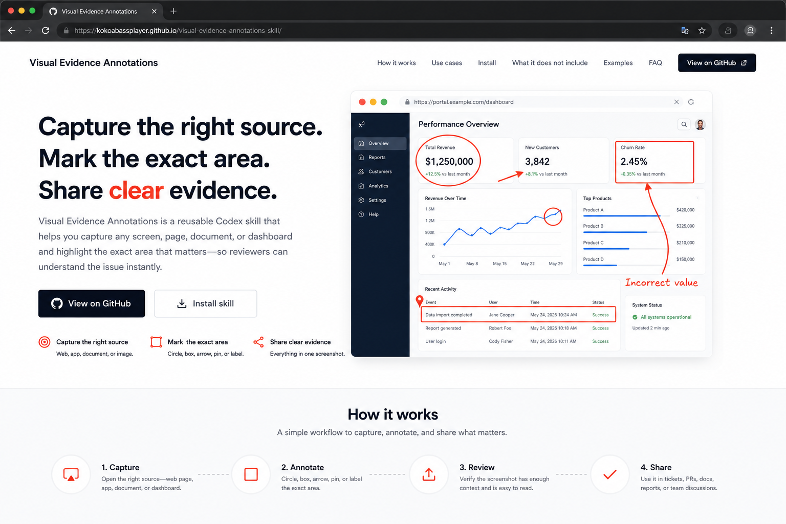
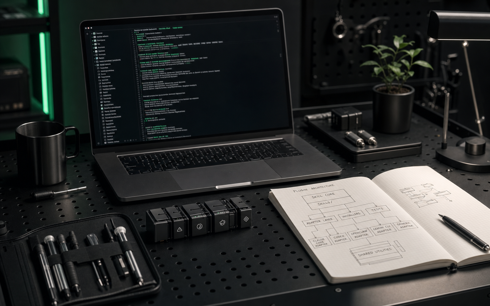

Plugin creation kit
Agent Plugin Builder
The repo generator for AI agent plugins.
Turn a repeatable workflow into an installable skill package with adapters, docs, tests, and one-command setup.

one command
npx github:Kokoabassplayer/agent-plugin-builder create my-plugin

Build the repo around the skill.
SKILL.md
Adapters
Installer
Docs
Tests
Works with every agent
One skill core. Multiple harnesses.
Keep the reusable behavior in the skill. Let generated adapter files explain how Codex, Claude Code, OpenClaw, Gemini CLI, and generic Agent Skills should pick it up.
Escape the one-off plugin repo.
Current builder outputs
Everything a public plugin repo needs.
The generated project is meant to be readable by humans, installable by users, and usable by multiple agent harnesses without rewriting the core idea.
Skill package
Creates a valid Agent Skill with room for scripts, references, examples, and assets.
Harness adapters
Documents the same capability for Codex, Claude Code, OpenClaw, Gemini CLI, and generic agents.
Installer package
Creates a Node CLI package plus shell and PowerShell wrapper paths for cross-platform use.
Docs site
Starts a GitHub Pages-ready documentation surface for install instructions and examples.
Verification loop
Adds smoke tests and package checks so users can trust the generated repo before publishing.
created files
skills/my-plugin/SKILL.md
packages/installer/
docs/index.html
.github/workflows/check.ymlCommand builder
Create the install command before you leave the page.
Choose the plugin name and description. The command updates instantly and can be copied into any terminal.
terminal
npx github:Kokoabassplayer/agent-plugin-builder create visual-evidence-kit --description "Capture proof for reviewers"Plugins you can create
Start with workflows people already repeat.
Visual evidence comments
Capture, annotate, and post screenshots for technical review.
Finance review helper
Package workbook checks, visual evidence, and issue comment templates.
Release proof kit
Bundle smoke tests, screenshots, and PR-ready status updates.
Plugin builder skill
Use this repo to create the next repo generator workflow.
Support the project
Keep the builder open and useful.
Sponsor the work if this helps your team turn private agent workflows into shareable tools.